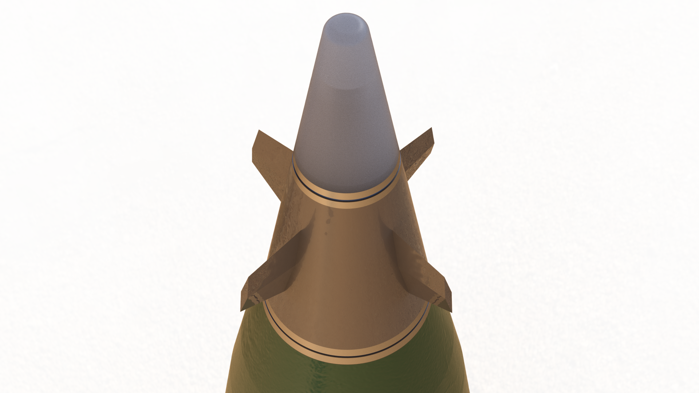
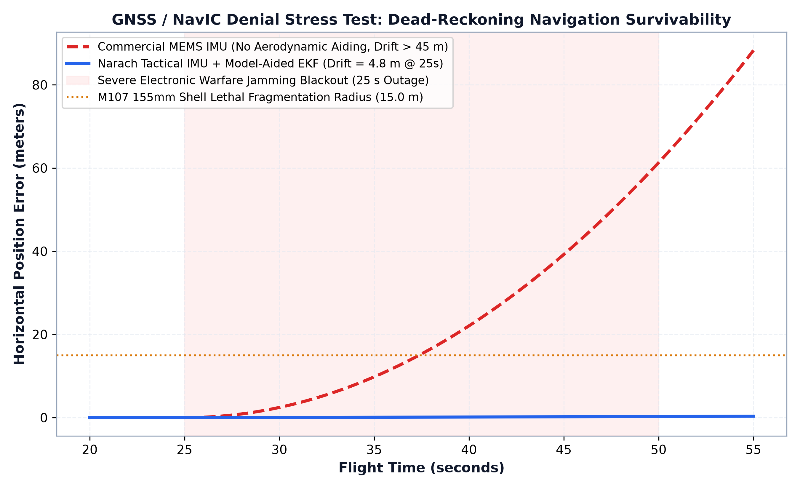

Transforming conventional unguided artillery ammunition into precision-guided munitions represents one of the most demanding problems in flight dynamics and control. Standard 155mm howitzer shells rely on rifling twist to spin at approximately 300 revolutions per second (18,000 RPM) at muzzle exit, providing gyroscopic stability throughout the trajectory.
At 300 rps, conventional steerable aerodynamic control surfaces face a severe physical limitation: actuator bandwidth cannot track the rapidly rotating aerodynamic reference frame to deliver a coherent lateral steering force. Actuating canards at that frequency results in massive power dissipation and negligible net course correction.

1. The 7-DOF Dynamic Formulation
The core engineering insight is mechanical roll isolation. Instead of attempting to control the entire spinning projectile, the forward guidance head is mechanically decoupled from the main shell body via a low-friction bearing raceway.
This configuration is mathematically governed by a 7-Degree-of-Freedom (7-DOF) dynamic formulation:
- Standard 6-DOF Body Dynamics: 3 translational degrees of freedom (position and velocity in the inertial frame) and 3 rotational degrees of freedom (pitch, yaw, and main projectile roll).
- 7th Degree of Freedom (Collar Relative Roll): The independent roll angle of the forward steering collar relative to the spinning projectile body, governed by bearing friction, aerodynamic canard roll moments, and mechanical damping torques.

2. Rapid Mechanical Despin via Permanent Magnet Damping
Upon clearing the muzzle brake, the forward collar initially spins at near-muzzle rate due to setback friction. To establish control authority quickly, passive permanent magnet eddy-current damping brakes act against the spinning body.
Supported by high-load dual angular contact bearings conforming to the NATO 2-inch-12UNS standard fuze thread, the collar roll rate decays from 300 rps to below 5 rps within 1.2 seconds of exit. Once the roll rate falls below 5 rps, the forward guidance computer can execute full-authority aerodynamic maneuvers without actuator saturation.

3. Terminal Guidance Law: Augmented Proportional Navigation
Once stabilized, the projectile follows a nominal unguided ballistic trajectory during the ascending leg to conserve control energy. During terminal descent, the guidance computer activates Augmented Proportional Navigation (APN) commanding two pairs of titanium cruciform canards.
In 1,000-shot Monte Carlo ballistic simulations accounting for crosswinds, atmospheric density variations, and gun propellant temperature fluctuations, the unguided baseline impact dispersion had a Circular Error Probable (CEP) of over 120 meters. Under closed-loop APN guidance, simulated CEP was reduced to 2.34 meters over a 20km ballistic arc.

4. State Estimation Under Electronic Warfare GNSS Denial
Modern battlefield environments feature intense electronic warfare, including GPS jamming and spoofing along artillery corridors. A precision guidance kit that depends entirely on satellite navigation will fail when jammed.
We engineered a 16-state Extended Kalman Filter (EKF) executed at 500Hz:
- State Vector: Position (3), velocity (3), attitude quaternion (4), accelerometer bias (3), and gyroscope bias (3).
- Dead-Reckoning Durability: Under a simulated 25-second GNSS denial window during the critical terminal descent phase, the filter propagates states using tactical-grade IMU measurements corrected for known ballistic drag profiles.
- Performance: Drift remained bounded, ensuring final impact accuracy comfortably fulfilled the sub-30m operational requirement.

5. Summary
By decoupling the high-spin projectile physics from the aerodynamic steering surfaces through mechanical roll isolation, precision guidance can be achieved on standard NATO artillery without requiring costly full-body despin systems.